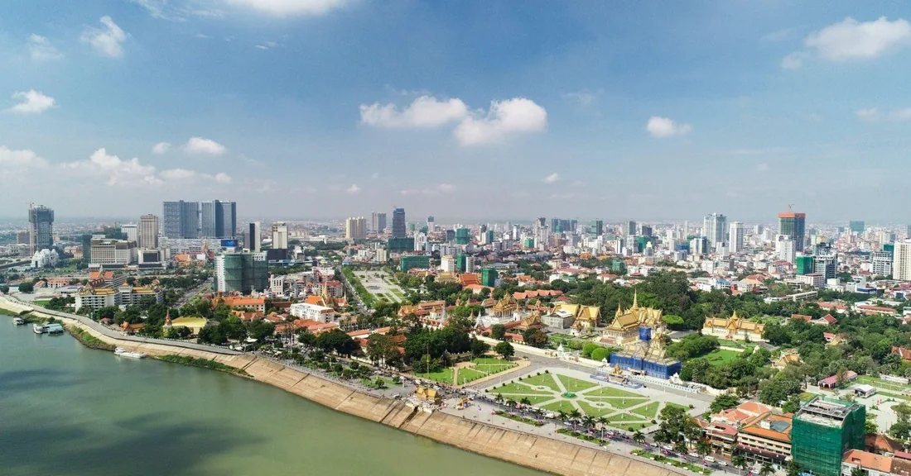
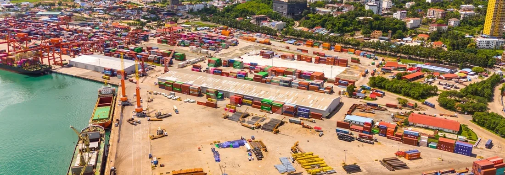
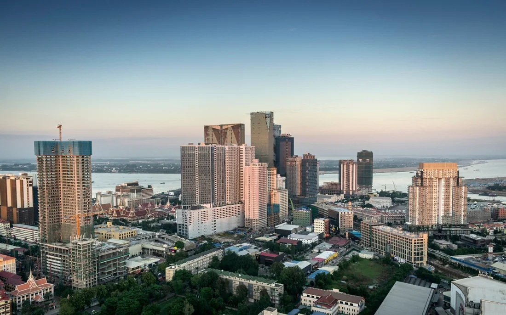
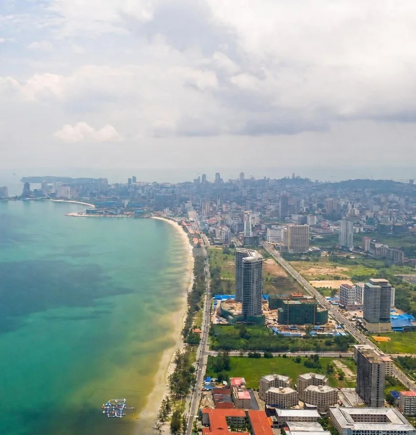
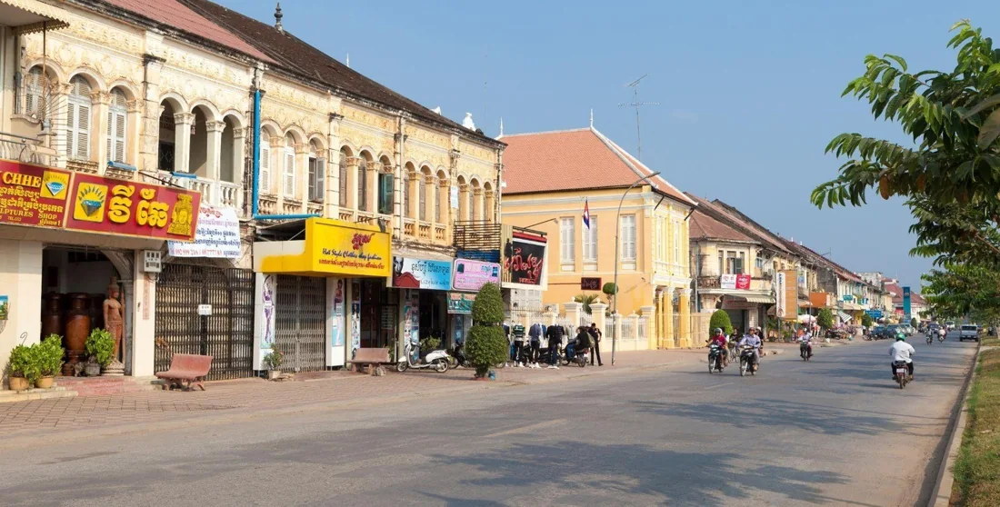
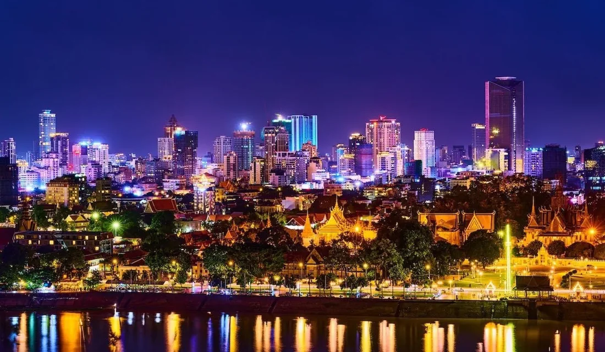
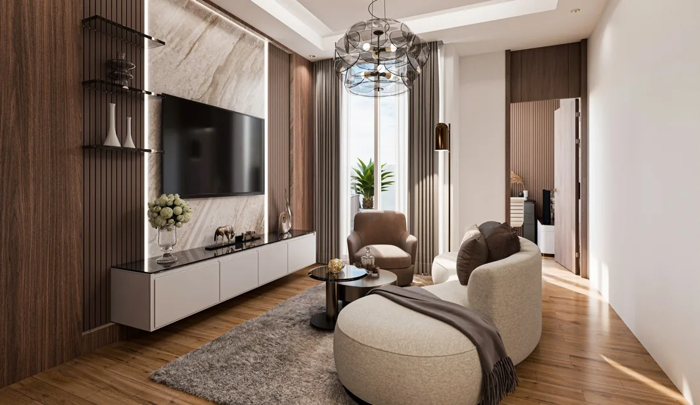

Для аренды
Кто будет жить, сколько месяцев в году и кто займётся заселением и обслуживанием.
Познакомьтесь со страной и узнайте, как выбрать недвижимость для жизни и инвестиций.
Главное о стране, жизни и недвижимости в Камбодже.

Королевство в Юго-Восточной Азии, между Таиландом, Вьетнамом и Лаосом. Страна древних храмов, растущих городов и побережья Сиамского залива.
Основная религия — буддизм.
Производство, сельское хозяйство, туризм и логистика связывают Камбоджу с рынками региона. Дороги, аэропорты и порт поддерживают развитие городов.

Январь–июль каждого года. Рост на 21,3%. В 2026 году: экспорт — $20,81 млрд, импорт — $23,26 млрд.
Объявленный капитал одобренных проектов, а не объём уже вложенных средств.
Производство. Одежда, обувь и другие экспортные товары. Сельское хозяйство. Рис, фрукты, орехи и переработка. Туризм. Ангкор, города и острова. Логистика и строительство. Новые маршруты, склады и городские проекты.
Скоростная дорога связывает Пномпень и Сиануквиль. Развитие аэропортов и морского порта делает поездки и перевозки удобнее. Для конкретного объекта важно проверять реальное время в пути и инфраструктуру вокруг него.
Столица, культурный центр или море — начните с города, который подходит вашей задаче.

Деловой центр страны: банки, международные школы, клиники, торговые центры и набережные. Здесь живут местные семьи, предприниматели и иностранные специалисты.
Посмотреть рынок арендыМеждународная среда, рестораны, офисы и сервисы. Один из ориентиров премиального рынка.
Посольства, AEON Mall и современные жилые комплексы.
Район Русского рынка, небольших кафе и повседневной городской жизни.
Семейная среда, школы и жилые кварталы вдали от туристического центра.
Невысокая застройка, отели, рынки и зелёные улицы. Рядом — Ангкор, включённый в список ЮНЕСКО в 1992 году, и озеро Тонлесап.
Для недвижимости здесь особенно важны туристический спрос, сезонность и качество управления.

Морской порт, пляжи и отправная точка на острова. С городом связаны логистика и развитие прибрежной недвижимости.
Кох Ронг и Кох Ронг Самлоем — островной отдых, пляжи и гостиничные форматы.

Основные расчёты с недвижимостью — в долларах США. Можно покупать, продавать и получать доход от аренды в долларах.
В стране распространены QR-платежи. Условия открытия счёта зависят от банка. Помогаем выбрать банк и сопровождаем весь процесс открытия счёта.
Официальный язык — кхмерский. Английский распространён в туристической и деловой среде. В крупных городах доступны доставка, магазины, частные клиники и международные школы.
Подберём визу для поездки или длительного проживания и поможем с оформлением. Продление визы на год с последующим ежегодным продлением — ориентировочно $400–500.
Смотрите на район, будущего арендатора и расходы — вместе с ценой объекта.

Квартира с одной спальней · в месяц
Ставка зависит от дома, площади, мебели и срока аренды.
Кто будет жить, сколько месяцев в году и кто займётся заселением и обслуживанием.
Кто купит объект после вас, какие есть конкуренты и сколько стоит выход из сделки.
Удобство района, школы, медицина, транспорт и расходы на повседневную жизнь.
Измените исходные данные и посмотрите, как меняется результат.
Проверьте значения: стоимость больше нуля, аренда от нуля, месяцев от 0 до 12, расходы от 0 до 100%.
9,9% от стоимости объекта
Регистрация права, применимые налоги и сборы, проверка документов и юридическое сопровождение. Базу расчёта и возможные льготы проверяют для конкретной сделки.
Комплектация, техника, текстиль, фотографии и первоначальная подготовка квартиры.
Резерв на месяцы без аренды, уборку и повторное заселение.
Платежи управляющей компании, ремонт, страхование и применимые налоги. Уточните, какие расходы оплачивает арендатор, а какие — собственник.
Комиссия, оформление передачи права и возможные налоги. Сравнивайте итоговую сумму после расходов, а не только цену продажи.
Иностранец может оформить квартиру в кондоминиуме в 100% полную собственность на своё имя.
Прямое владение землёй иностранцам недоступно. Виллы, дома и землю можно приобрести через траст — помогаем с его оформлением.
До сделки проверяем всю документацию объекта и готовим своё заключение.
Выбрать город, формат и общий бюджет: для себя, аренды или последующей продажи.
Сравнить объекты и согласовать условия бронирования, сроки и возвратность платежа.
Установить право продавца, статус проекта, разрешения, квоту и возможные обременения.
Зафиксировать цену, график оплаты, комплектацию, сроки передачи и ответственность сторон.
Подготовить банковские документы, проверить реквизиты и сохранить подтверждения платежей.
Проверить объект, оформить передачу и регистрацию права, согласовать дальнейшее управление.
Покупка дистанционно: поможем с документами, расчётами и сопровождением сделки.

Для аренды нужен понятный процесс: поиск жильцов, заселение, обслуживание и регулярный отчёт собственнику.
В договоре управления проверьте комиссию, перечень услуг, порядок ремонта, отчётность и условия расторжения.
Заранее оцените круг покупателей, конкурирующие предложения и затраты на продажу. Рост цены и быстрая перепродажа не гарантированы: важны качество объекта, спрос и срок выхода.
Да, квартиру в кондоминиуме можно оформить в 100% полную собственность на своё имя. Поможем подобрать объект и оформить покупку.
Да. Организуем онлайн-показ, подготовку договора и сопровождение оплаты. Порядок подписания и регистрации согласуем для выбранного объекта.
Пномпень — деловая жизнь и долгосрочная аренда, Сиемреап — туризм и Ангкор, побережье — отдых и курортные форматы. Выбор зависит от вашей задачи и бюджета.
Месячная аренда умножается на количество месяцев сдачи за год. Затем из полученной суммы вычитаются расходы на управление и обслуживание.
Управление можно передать компании: поиск арендаторов, заселение, обслуживание и отчётность. Состав услуг и комиссия фиксируются в договоре.
Обсудите с нами вашу задачу — город, бюджет и подходящий формат недвижимости.